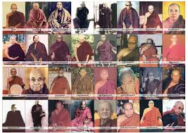

In Burmese Buddhism, Sayadaw literally means "royal teacher". It is a highly respected honorific title for senior monks or abbots. The suffix "gyi" (great) is frequently added to form Sayadawgyi, which refers to highly influential elder monks, meditation masters, and prominent religious scholars. 1. Meditation Masters and Lineage HoldersMany Sayadaws are renowned worldwide for establishing specific systems of Vipassana (insight) and Samatha (tranquility) meditation. They make profound teachings, which were historically reserved for forest ascetics, accessible to everyday practitioners.Mahasi Sayadaw: One of the most famous figures in modern Theravada Buddhism, known globally for his foundational Satipatthana-based mindfulness method.Ledi Sayadaw: A brilliant scholar from the Monywa region who popularized meditation among laypeople in the 19th and early 20th centuries.Pa-Auk Sayadaw: Known for his highly structured teachings on breathing mindfulness and deep absorption states.
Sayadaws undergo decades of rigorous scriptural study, often earning the highest degrees in Pali texts and Buddhist philosophy.Mingun Sayadaw: Recognized for his unmatched eidetic memory, he recited the entire Pali Canon during the Sixth Buddhist Council and holds a Guinness World Record for human memory.Many Sayadaws extend their impact far beyond monastery walls by establishing expansive charity networks, hospitals, and educational academies, and even traveling to spread Buddhism internationally.Sitagu Sayadaw: Internationally revered for his disaster relief efforts, interfaith advocacy, and socially engaged projects like rural hospitals and water supply charities.